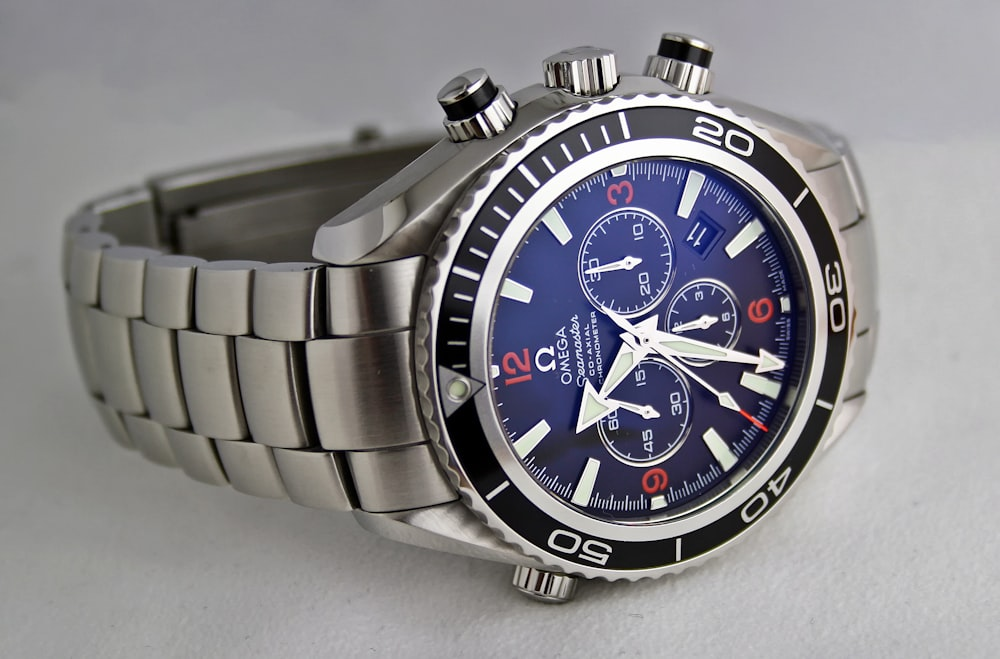

A fine watch is built to last generations - but only if you treat it with the respect its engineering deserves. After thirty years at the bench, I have seen countless timepieces arrive in our workshop with problems that could have been prevented by simple daily habits. This guide distils what every owner should know, whether you wear a humble field watch or a heirloom chronograph.
Understanding Your Watch's Enemy: Everyday Exposure
Most watch damage does not happen in dramatic moments. It accumulates quietly through sweat, dust, perfume, hand sanitiser, and the subtle knocks of desk drawers and car doors. Perspiration is particularly corrosive because it contains salt and acids that attack case backs, crown tubes, and bracelet pins over time. If you wear your watch during exercise or in hot climates, rinse the case and bracelet under lukewarm running water at the end of the day - provided your watch is water resistant to at least 50 metres and the crown is fully screwed down.
Cosmetics and aerosols are another overlooked threat. Spraying fragrance directly onto a leather strap will dry and crack the material within months. Apply lotions and perfumes before putting on your watch, and allow them to dry completely. For metal bracelets, a quick wipe with a soft microfibre cloth after removal removes the residue that would otherwise work its way into link gaps and spring bars.
Cleaning: What You Can Do at Home
Regular cleaning keeps your watch looking sharp and helps you spot early warning signs such as moisture under the crystal or a loose crown. For daily maintenance, a dry microfibre cloth is sufficient for the case and crystal. Avoid paper towels - they contain fibres that can micro-scratch sapphire and acrylic crystals over time.
For a deeper clean on water-resistant watches, use a bowl of lukewarm water with a drop of mild, fragrance-free dish soap. Dip a soft toothbrush and gently scrub the case, bezel, and bracelet, paying attention to the gaps between links where grime collects. Rinse thoroughly and pat dry with a lint-free cloth. Never use ultrasonic cleaners at home; the vibrations that dislodge dirt can also loosen hands, damage delicate finishes, and compromise gaskets if used incorrectly.
Leather straps require different care entirely. Wipe them with a slightly damp cloth, never submerge them, and condition them every few months with a leather balm designed for watch straps. Rotate between two straps if you wear your watch daily - this allows each strap to dry fully and extends its lifespan considerably.
Water Resistance: Know Your Limits
Water resistance is not permanent. Gaskets and seals degrade with age, temperature changes, and chemical exposure. A watch rated to 100 metres is suitable for swimming but not for high-board diving or hot showers, where steam can penetrate even a tightly sealed case. We recommend having water resistance tested annually if you swim regularly, and after any battery change or case opening.
Always ensure the crown is pushed in or screwed down before any contact with water. A single forgotten crown position is the most common cause of movement corrosion we see in quartz watches. If your watch has pushers - as on a chronograph - confirm they are not engaged unless the manufacturer explicitly states the watch is safe to operate underwater.
Magnetism and Accuracy
Modern life is full of magnetic fields: laptop speakers, phone cases, handbag clasps, and induction hobs all sit within arm's reach of your wrist. When a mechanical movement becomes magnetised, the balance spring sticks to itself and the watch runs dramatically fast - sometimes gaining minutes per hour. Demagnetisation takes seconds on our bench and costs very little, but prevention is easier still.
Keep your mechanical watch away from speakers, MRI machines, and industrial equipment. If you notice sudden accuracy changes, bring the watch in for a quick check before assuming it needs a full service. Quartz movements are largely unaffected by everyday magnetism, though extreme fields can stop them temporarily.
Storage and Rotation
When you are not wearing your watch, store it in a cool, dry place away from direct sunlight. UV light fades dials and degrades lume compounds over years. A watch box with individual cushions prevents watches from scratching one another and keeps dust away from crowns and pushers.
For automatic watches you do not wear daily, a quality winder keeps the movement running and the lubricants distributed. However, overwinding is not a concern with modern automatics - they disengage when fully wound. Set your winder to the correct turns-per-day specification for your calibre; over-spinning can cause unnecessary wear on the winding mechanism.
Servicing Intervals: Prevention Over Cure
Mechanical watches should be serviced every three to five years, depending on the manufacturer and how often you wear them. A full service involves disassembly, ultrasonic cleaning, replacement of worn parts, fresh lubrication, and regulation - restoring the movement to factory tolerances. Waiting until a watch stops or runs minutes off each day often means additional parts need replacing, which increases cost significantly.
Quartz watches require less frequent attention but should still have gaskets replaced every two to three years and batteries changed promptly when they expire. Leaving a dead battery inside can leak and corrode the movement beyond repair. When we replace a battery at ChronoLux, we always inspect gaskets and perform a pressure test as standard.
When to Visit a Professional
Some tasks should never be attempted at home. Opening a case back without the proper tools and a clean environment invites dust into the movement. Adjusting bracelet pins with improvised tools risks scratching lugs or launching spring bars across the room. If you notice condensation under the crystal, a rattling rotor, a crown that feels gritty, or timekeeping that suddenly shifts, book an assessment promptly.
At ChronoLux, we offer complimentary private assessments and transparent quotes before any work begins. A ten-minute check can save you from a four-figure restoration bill down the line. Treat your watch as the precision instrument it is - with consistent, gentle care and timely professional attention, it will keep accurate time long enough to become someone else's treasured heirloom.